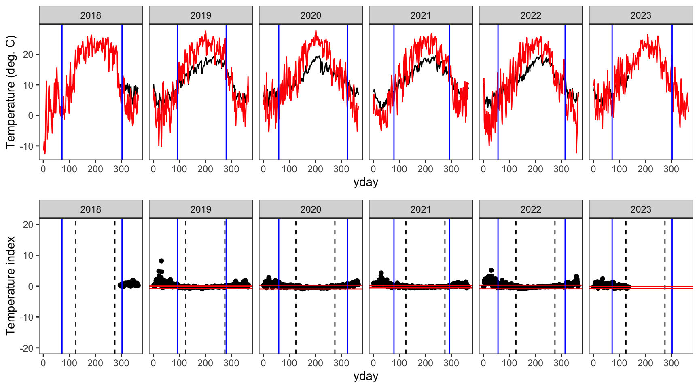
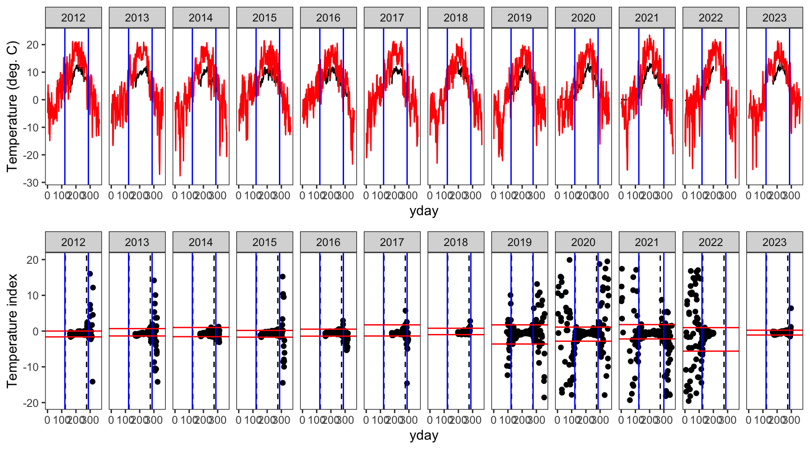
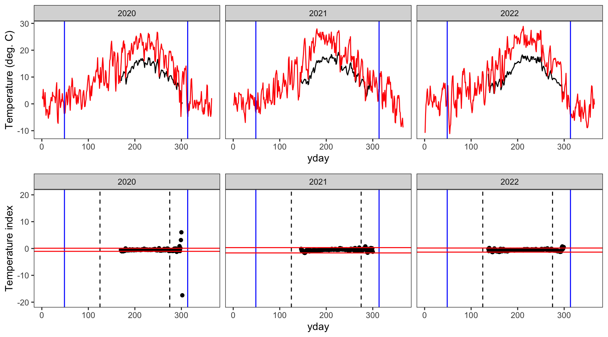
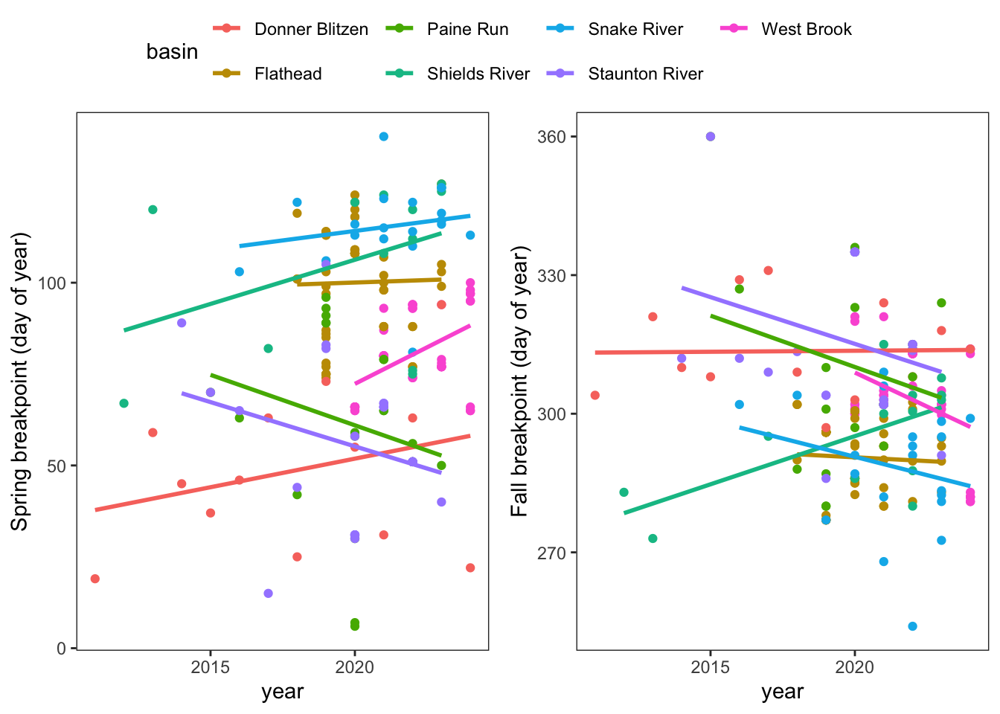

Code
siteinfo <- read_csv("data/EcoDrought_SiteInformation.csv")
datatable(siteinfo)Code
siteinfo_sp <- st_as_sf(siteinfo, coords = c("long", "lat"), crs = 4326)
mapview(siteinfo_sp, zcol = "designation")Purpose: Define periods of air-water temperature synchronization, i.e., calculate spring/fall breakpoints. Code adapted from Letcher et al. (2016)
Site information
siteinfo <- read_csv("data/EcoDrought_SiteInformation.csv")
datatable(siteinfo)siteinfo_sp <- st_as_sf(siteinfo, coords = c("long", "lat"), crs = 4326)
mapview(siteinfo_sp, zcol = "designation")Load flow and temp data
dat <- read_csv("data/EcoDrought_FlowTempData_DailyWeekly.csv")
dat# A tibble: 202,014 31
station_no site_name site_id basin subbasin region lat long elev_ft
<chr> <chr> <chr> <chr> <chr> <chr> <dbl> <dbl> <dbl>
1 12355347 Big Creek NWIS BIG Flathe Big Cre Flat 48.6 -114. 3528.
2 12355347 Big Creek NWIS BIG Flathe Big Cre Flat 48.6 -114. 3528.
3 12355347 Big Creek NWIS BIG Flathe Big Cre Flat 48.6 -114. 3528.
4 12355347 Big Creek NWIS BIG Flathe Big Cre Flat 48.6 -114. 3528.
5 12355347 Big Creek NWIS BIG Flathe Big Cre Flat 48.6 -114. 3528.
6 12355347 Big Creek NWIS BIG Flathe Big Cre Flat 48.6 -114. 3528.
7 12355347 Big Creek NWIS BIG Flathe Big Cre Flat 48.6 -114. 3528.
8 12355347 Big Creek NWIS BIG Flathe Big Cre Flat 48.6 -114. 3528.
9 12355347 Big Creek NWIS BIG Flathe Big Cre Flat 48.6 -114. 3528.
10 12355347 Big Creek NWIS BIG Flathe Big Cre Flat 48.6 -114. 3528.
# 202,004 more rows
# 22 more variables: area_sqmi <dbl>, designation <chr>, date <date>,
# DischargeReliability <dbl>, TempReliability <dbl>, flow_mean <dbl>,
# flow_min <dbl>, flow_max <dbl>, tempc_mean <dbl>, tempc_min <dbl>,
# tempc_max <dbl>, flow_mean_filled <dbl>, flow_mean_cms <dbl>,
# flow_mean_filled_cms <dbl>, area_sqkm <dbl>, Yield_mm <dbl>,
# Yield_filled_mm <dbl>, flow_mean_7 <dbl>, flow_mean_filled_7 <dbl>, Cut out all days with missing temp records
# A tibble: 109,914 31
station_no site_name site_id basin subbasin region lat long elev_ft
<chr> <chr> <chr> <chr> <chr> <chr> <dbl> <dbl> <dbl>
1 <NA> BigCreekLower BIG_001 Flathead Big Cre Flat 48.6 -114. 3429.
2 <NA> BigCreekLower BIG_001 Flathead Big Cre Flat 48.6 -114. 3429.
3 <NA> BigCreekLower BIG_001 Flathead Big Cre Flat 48.6 -114. 3429.
4 <NA> BigCreekLower BIG_001 Flathead Big Cre Flat 48.6 -114. 3429.
5 <NA> BigCreekLower BIG_001 Flathead Big Cre Flat 48.6 -114. 3429.
6 <NA> BigCreekLower BIG_001 Flathead Big Cre Flat 48.6 -114. 3429.
7 <NA> BigCreekLower BIG_001 Flathead Big Cre Flat 48.6 -114. 3429.
8 <NA> BigCreekLower BIG_001 Flathead Big Cre Flat 48.6 -114. 3429.
9 <NA> BigCreekLower BIG_001 Flathead Big Cre Flat 48.6 -114. 3429.
10 <NA> BigCreekLower BIG_001 Flathead Big Cre Flat 48.6 -114. 3429.
# 109,904 more rows
# 22 more variables: area_sqmi <dbl>, designation <chr>, date <date>,
# DischargeReliability <dbl>, TempReliability <dbl>, flow_mean <dbl>,
# flow_min <dbl>, flow_max <dbl>, tempc_mean <dbl>, tempc_min <dbl>,
# tempc_max <dbl>, flow_mean_filled <dbl>, flow_mean_cms <dbl>,
# flow_mean_filled_cms <dbl>, area_sqkm <dbl>, Yield_mm <dbl>,
# Yield_filled_mm <dbl>, flow_mean_7 <dbl>, flow_mean_filled_7 <dbl>, Fill missing dates using fasstr
dat <- fill_missing_dates(dat, dates = date, groups = site_name, pad_ends = TRUE)
dat# A tibble: 188,463 31
station_no site_name site_id basin subbasin region lat long elev_ft
<chr> <chr> <chr> <chr> <chr> <chr> <dbl> <dbl> <dbl>
1 <NA> BigCreekLower <NA> <NA> <NA> <NA> NA NA NA
2 <NA> BigCreekLower <NA> <NA> <NA> <NA> NA NA NA
3 <NA> BigCreekLower <NA> <NA> <NA> <NA> NA NA NA
4 <NA> BigCreekLower <NA> <NA> <NA> <NA> NA NA NA
5 <NA> BigCreekLower <NA> <NA> <NA> <NA> NA NA NA
6 <NA> BigCreekLower <NA> <NA> <NA> <NA> NA NA NA
7 <NA> BigCreekLower <NA> <NA> <NA> <NA> NA NA NA
8 <NA> BigCreekLower <NA> <NA> <NA> <NA> NA NA NA
9 <NA> BigCreekLower <NA> <NA> <NA> <NA> NA NA NA
10 <NA> BigCreekLower <NA> <NA> <NA> <NA> NA NA NA
# 188,453 more rows
# 22 more variables: area_sqmi <dbl>, designation <chr>, date <date>,
# DischargeReliability <dbl>, TempReliability <dbl>, flow_mean <dbl>,
# flow_min <dbl>, flow_max <dbl>, tempc_mean <dbl>, tempc_min <dbl>,
# tempc_max <dbl>, flow_mean_filled <dbl>, flow_mean_cms <dbl>,
# flow_mean_filled_cms <dbl>, area_sqkm <dbl>, Yield_mm <dbl>,
# Yield_filled_mm <dbl>, flow_mean_7 <dbl>, flow_mean_filled_7 <dbl>, Unique basins
unique(dat$basin)[1] NA "Flathead" "West Brook" "Donner Blitzen"
[5] "Paine Run" "Piney River" "Staunton River" "Shields River"
[9] "Snake River" Bind climate data to flow-temp data
climdf <- read_csv("data/Daymet_daily.csv")
dat <- dat %>% left_join(climdf)Plot an example air (orange) and water (blue) temperature time series
dat %>% filter(site_name == "BigCreekLower") %>% #select(date, tempc_mean, air_temp_mean) %>%
ggplot() +
geom_line(aes(x = date, y = air_temp_mean), color = "darkorange") +
geom_line(aes(x = date, y = tempc_mean), color = "blue") +
theme_bw() + ylab("temperature (deg C)")
Prep data
# Calculate temperature index. Add small # to avoid infinity
dat_index <- dat %>%
mutate(index = (tempc_mean - air_temp_mean) / (tempc_mean + 0.00000001),
year = year(date)) %>%
filter(!is.na(yday))
# Define list of sites
siteList <- unique(dat_index$site_name)
# Order by group and date
dat_index <- dat_index[order(dat_index$site_name, dat_index$year, dat_index$yday),]
# For checking the order of e
dat_index$count <- 1:length(dat_index$year)
# Define the site/year ID
dat_index$siteYear <- paste(dat_index$site_name, dat_index$year, sep = '_')
# Maintain order
dat_index <- dat_index[order(dat_index$count),]
dat_index# A tibble: 183,960 41
station_no site_name site_id basin subbasin region lat long elev_ft
<chr> <chr> <chr> <chr> <chr> <chr> <dbl> <dbl> <dbl>
1 <NA> Avery Brook <NA> <NA> <NA> <NA> NA NA NA
2 <NA> Avery Brook <NA> <NA> <NA> <NA> NA NA NA
3 <NA> Avery Brook <NA> <NA> <NA> <NA> NA NA NA
4 <NA> Avery Brook <NA> <NA> <NA> <NA> NA NA NA
5 <NA> Avery Brook <NA> <NA> <NA> <NA> NA NA NA
6 <NA> Avery Brook <NA> <NA> <NA> <NA> NA NA NA
7 <NA> Avery Brook <NA> <NA> <NA> <NA> NA NA NA
8 01171000 Avery Brook AB West Brook West Br Mass 42.4 -72.7 699.
9 01171000 Avery Brook AB West Brook West Br Mass 42.4 -72.7 699.
10 01171000 Avery Brook AB West Brook West Br Mass 42.4 -72.7 699.
# 183,950 more rows
# 32 more variables: area_sqmi <dbl>, designation <chr>, date <date>,
# DischargeReliability <dbl>, TempReliability <dbl>, flow_mean <dbl>,
# flow_min <dbl>, flow_max <dbl>, tempc_mean <dbl>, tempc_min <dbl>,
# tempc_max <dbl>, flow_mean_filled <dbl>, flow_mean_cms <dbl>,
# flow_mean_filled_cms <dbl>, area_sqkm <dbl>, Yield_mm <dbl>,
# Yield_filled_mm <dbl>, flow_mean_7 <dbl>, flow_mean_filled_7 <dbl>, Get the moving average of the temp index for each site and add to data frame
# Set frame sizefor moving mean, which is centered by default
window <- 10
# Number of sites
nSites <- length(siteList)
# Unique site and year combos
siteYearCombos <- unique(dat_index[,c('site_name','year')])
# Add columns for moving mean and sd
dat_index$movingMean <- NA
# Loop through site/year combinations calculating moving means
for (i in 1:nrow(siteYearCombos)){
# Status
# print(c(i,as.character(siteYearCombos$site_name[i]), siteYearCombos$year[i], i/nrow(siteYearCombos)))
# Index current site/year
currSite <- which(dat_index$site_name == as.character(siteYearCombos$site_name[i]) & dat_index$year == siteYearCombos$year[i] )
# Only calculate for sites with enough data
if(length(currSite) >= window){currMean <- rollapply(dat_index$index[currSite], width = window, fill = NA, mean)} else(currMean <- NA)
# Add to main dataframe
dat_index$movingMean[currSite] <- currMean
}
# Maintain order
dat_index <- dat_index[order(dat_index$count),]
write_csv(dat_index, "data/EcoDrought_FlowTempData_DailyWeekly_clean.csv")Create the breaks data frame
# Define breakpoint time period and range for tempIndex
beginningDayForCI <- 125
endingDayForCI <- 275
loCI <- 0.001
hiCI <- 0.999
for ( i in 1:nrow(siteYearCombos)){
# Print status
#print(i)
# Index sites, years, and HUCs
tempBreaks <- data.frame( year = as.numeric (siteYearCombos$year[i]),
site_name = as.character(siteYearCombos$site_name[i]),
# HUC12 = as.character(unique(e$HUC12[which(e$site == siteYearCombos$site[i])])),
#HUC8 = as.character(unique(e$HUC8 [which(e$site == siteYearCombos$site[i])])),
#HUC4 = as.character(unique(e$HUC4 [which(e$site == siteYearCombos$site[i])])),
quantileLo = NA,
quantileHi = NA)
# Calculate the tempindex quantiles
tmp <- dat_index[dat_index$site_name == siteYearCombos$site_name[i] & dat_index$year %in% siteYearCombos$year[i] & dat_index$yday %in% beginningDayForCI:endingDayForCI, 'index']
if (any(!is.na(tmp))){
TIQ <- quantile(tmp, probs = c(loCI,0.5,hiCI), na.rm = TRUE)
# High and low quantiles
tempBreaks$quantileLo <- TIQ[1]
tempBreaks$quantileHi <- TIQ[3]
}
# Add current site to "breaks"
if ( i == 1 ) { breaks <- tempBreaks } else( breaks <- rbind(breaks, tempBreaks))
}
# Add columns used later
breaks$springBPComplete <- FALSE
breaks$fallBPComplete <- FALSE
breaks$springOrFallBPComplete <- FALSE
breaks$springBP <- NA
breaks$fallBP <- NA
head(breaks) year site_name quantileLo quantileHi springBPComplete fallBPComplete
1 2020 Avery Brook -0.4928280 0.4245787 FALSE FALSE
2 2021 Avery Brook -0.4853836 0.2876319 FALSE FALSE
3 2022 Avery Brook -0.4425745 0.1521084 FALSE FALSE
4 2023 Avery Brook -0.4431010 0.2761850 FALSE FALSE
5 2024 Avery Brook -0.4147228 0.0801055 FALSE FALSE
6 2017 BigCreekLower -0.4135217 0.7688442 FALSE FALSE
springOrFallBPComplete springBP fallBP
1 FALSE NA NA
2 FALSE NA NA
3 FALSE NA NA
4 FALSE NA NA
5 FALSE NA NA
6 FALSE NA NAUse runs analysis of the movingMean to define spring and fall breakpoints:
# Set range (dOY) and count for assigning spring BP
minCompleteDOYBP1 <- 15
maxCompleteDOYBP1 <- 175
numForCompleteBP1 <- round( ( maxCompleteDOYBP1-minCompleteDOYBP1 ) * 0.9 )
# Set range (dOY) and count for assigning fall BP
minCompleteDOYBP3 <- 225
maxCompleteDOYBP3 <- 350
numForCompleteBP3 <- round( ( maxCompleteDOYBP3-minCompleteDOYBP3 ) * 0.9 )
# Number of days in a row that need to be within the CIs to get assigned synchronised (referred to as numForward range)
numForwardSpring <- 10
numForwardFall <- 16
# Loop through all sites
for (j in 1:nSites){
#library(plyr)
# Index current site
# ------------------
e1 <- dat_index[dat_index$site_name == siteList[j],]
# Index spring range
# ------------------
e3Spring <- e1[ e1$yday >= minCompleteDOYBP1 & e1$yday <= maxCompleteDOYBP1, ]
# Empty out from previous run
completeYearsSpring <- NULL
# If statement to avoid error if e3Spring is empty
if ( !plyr::empty( e3Spring ) ) {
# Determine which years have complete records in spring
completeSpring <- as.data.frame( table( e3Spring$year,is.na( e3Spring$tempc_mean ) ) )
incompleteYearsSpring <- as.numeric(as.character(completeSpring$Var1[completeSpring$Var2 == 'FALSE' & completeSpring$Freq < numForCompleteBP1]))
completeYearsSpring <- as.numeric(as.character(completeSpring$Var1[completeSpring$Var2 == 'FALSE' & completeSpring$Freq >= numForCompleteBP1]))
}
# Index fall range
# ----------------
e3Fall <- e1[ e1$yday >= minCompleteDOYBP3 & e1$yday <= maxCompleteDOYBP3, ]
# Empty out from previous run
completeYearsFall <- NULL
# If statement to avoid error if e3Fall is empty
if ( !plyr::empty( e3Fall ) ) {
# Determine which years have complete records in fall
completeFall <- as.data.frame( table( e3Fall$year,is.na( e3Fall$tempc_mean ) ) )
incompleteYearsFall <- as.numeric(as.character(completeFall$Var1[completeFall$Var2 == 'FALSE' & completeFall$Freq < numForCompleteBP3]))
completeYearsFall <- as.numeric(as.character(completeFall$Var1[completeFall$Var2 == 'FALSE' & completeFall$Freq >= numForCompleteBP3]))
}
# Years with either a complete spring or complete fall record
completeYearsSpringOrFall <- unique(c(completeYearsSpring,completeYearsFall))
# Loop through the years with at least one complete season
for (year in completeYearsSpringOrFall){
# Print status
#print(c('BP 1 and 3',j,as.character(siteList[j]),year))
# New column for selecting years with at least one complete season
breaks$springOrFallBPComplete[ breaks$year == year & breaks$site_name == siteList[j] ] <- TRUE
# Index the high and low quantiles calculated from the tempIndex
lo <- breaks$quantileLo[breaks$year == year & breaks$site_name == siteList[j]]
hi <- breaks$quantileHi[breaks$year == year & breaks$site_name == siteList[j]]
# Index current year
eYear <- e1[e1$year == year, ]
# Spring Breakpoint Calculation
# -----------------------------
# Create dataframe for calculating number of synchronized days in a row.
runsSpring <- data.frame(array(NA,c(1,numForwardSpring)))
# Only calculate if it is a complete season
if(year %in% completeYearsSpring){
# Loop through approximate time forward until breakpoint in ascending water temp
for (i in min(eYear$yday):(200)){
# From the current day, loop forward through the numForward range to determined which days are in sync
for (ii in 2:numForwardSpring ){
# A 1 gets assigned if the moving mean of that day is within the CI range or
# if the iteration falls out of the approximated range examined. If the moving
# mean is outside of the range, it gets assigned a zero.
if( (i+ii-2) %in% eYear$yday ) {
runsSpring[ i,ii ] <- 1*((eYear$movingMean[ eYear$yday == (i+ii-2) ] >= lo) & (eYear$movingMean[ eYear$yday == (i+ii-2) ] <= hi))
} else (runsSpring[ i,ii ] <- 1 )
}# end numForward loop
# Determine if all of the days in the numForward range are in sync. If all days within numForward
# are in sync (assigned a 1), the product will be a 1, otherwise it is NA.
runsSpring[ i,1 ] <- prod( runsSpring[ i, 2:numForwardSpring ] )
}# End approximated seasonal loop
# The first day where all of the days ahead of it are in sync (in the numForward range) will be the minimum day with a 1.
# This day gets assigned the spring breakpoint
breaks$springBP[ breaks$year == year & breaks$site_name == siteList[j] ] <- min(which(runsSpring[,1] == 1))
# Fill in the complete springBP column
breaks$springBPComplete[ breaks$year == year & breaks$site_name == siteList[j] ] <- TRUE
} #completeYearsSpring if statement
# Fall Breakpoint Calculation
# ---------------------------
# Create dataframe for calculating number of days in a row within range
runsFall <- data.frame(array(NA,c(1,numForwardFall)))
# Only calculate if it is a complete season
if(year %in% completeYearsFall){
# Determine the point to stop to keep from going past lower limit if dOY
stopLoop <- max( c( minCompleteDOYBP3,min(eYear$yday)+numForwardFall + 1 ) )
# Loop through the approximate time backward until descending water temp
for (i in max(eYear$yday):stopLoop){
# From the current day, loop backward through the numForward range to determined which days are in sync
for (ii in 2:numForwardFall ){
# A 1 gets assigned if the moving mean of that day is within the CI range or
# if the iteration falls out of the approximated range examined. If the moving
# mean is outside of the range, it gets assigned a zero.
if( (i-ii+2) %in% eYear$yday ) {
runsFall[ i,ii ] <- 1*((eYear$movingMean[ eYear$yday == (i-ii+2) ] >= lo) & (eYear$movingMean[ eYear$yday == (i-ii+2) ] <= hi))
} else(runsFall[ i,ii ] <- 1 )
}# end numForward loop
# Determine if all of the days in the numForward range are in sync. If all days within numForward
# are in sync (assigned a 1), the product will be a 1, otherwise it is NA.
runsFall[ i,1 ] <- prod( runsFall[ i, 2:numForwardFall ] )
}# End approximated seasonal loop
# The last day where all of the days ahead of it are in sync (in the numForward range) will be the minimum day with a 1.
# This day gets assigned the fall breakpoint
breaks$fallBP[ breaks$year == year & breaks$site_name == siteList[j] ] <- max(which(runsFall[,1] == 1))
# Fill in the complete fallBP column
breaks$fallBPComplete[ breaks$year == year & breaks$site_name == siteList[j] ] <- TRUE
} #completeYearsFall if statement
} #completeYearsSpringOrFall loop
} #site loop
head(breaks) year site_name quantileLo quantileHi springBPComplete fallBPComplete
1 2020 Avery Brook -0.4928280 0.4245787 TRUE TRUE
2 2021 Avery Brook -0.4853836 0.2876319 TRUE TRUE
3 2022 Avery Brook -0.4425745 0.1521084 TRUE TRUE
4 2023 Avery Brook -0.4431010 0.2761850 TRUE FALSE
5 2024 Avery Brook -0.4147228 0.0801055 TRUE TRUE
6 2017 BigCreekLower -0.4135217 0.7688442 FALSE FALSE
springOrFallBPComplete springBP fallBP
1 TRUE 66 300
2 TRUE 93 304
3 TRUE 94 313
4 TRUE 79 NA
5 TRUE 97 282
6 FALSE NA NAFor sites that did not have enough data to calculate a breakpoint, use the mean breakpoint at the smallest scale that a mean exists (site or basin).
# Calculate mean BPs across different scales
meanBPSite <- plyr::ddply(breaks, "site_name", summarise, meanSpringBPSite = mean(springBP, na.rm = T), meanFallBPSite = mean(fallBP, na.rm = T) )
meanBPBasin <- plyr::ddply(breaks %>% left_join(siteinfo %>% select(site_name, basin)), "basin", summarise, meanSpringBPBasin = mean(springBP,na.rm=T), meanFallBPBasin = mean(fallBP,na.rm=T) )
#meanBPHUC8 <- ddply( breaks, .(HUC8) , summarise, meanSpringBPHUC8 = mean(springBP,na.rm=T), meanFallBPHUC8 = mean(fallBP,na.rm=T) )
#meanBPHUC4 <- ddply( breaks, .(HUC4) , summarise, meanSpringBPHUC4 = mean(springBP,na.rm=T), meanFallBPHUC4 = mean(fallBP,na.rm=T) )
# Merge in mean BPs to "breaks"
breaks <- merge( x = breaks, y = meanBPSite , by = 'site_name' , all.x = T, all.y = F, sort = F)
breaks <- merge( x = breaks %>% left_join(siteinfo %>% select(site_name, basin)), y = meanBPBasin, by = 'basin', all.x = T, all.y = F, sort = F)
#breaks <- merge( x = breaks, y = meanBPHUC8 , by = 'HUC8' , all.x = T, all.y = F, sort = F)
#breaks <- merge( x = breaks, y = meanBPHUC4 , by = 'HUC4' , all.x = T, all.y = F, sort = F)
# Add columns for final breakpoints
breaks$finalSpringBP <- NA
breaks$sourceSpringBP <- NA
breaks$finalFallBP <- NA
breaks$sourceFallBP <- NA
# Calculated BPs
# --------------
# Spring
newSpringBP <- which(is.na(breaks$finalSpringBP) & !is.na(breaks$springBP) )
breaks$finalSpringBP [ newSpringBP ] <- breaks$springBP[ newSpringBP ]
breaks$sourceSpringBP[ newSpringBP ] <- 'directly calculated'
#Fall
newFallBP <- which(is.na(breaks$finalFallBP) & !is.na(breaks$fallBP) )
breaks$finalFallBP [ newFallBP ] <- breaks$fallBP[ newFallBP ]
breaks$sourceFallBP[ newFallBP ] <- 'directly calculated'
# Site averaged BPs
# -----------------
# Spring
siteBP <- which(is.na(breaks$finalSpringBP) & !is.na(breaks$meanSpringBPSite) )
breaks$finalSpringBP [ siteBP ] <- breaks$meanSpringBPSite[ siteBP ]
breaks$sourceSpringBP[ siteBP ] <- 'site mean'
# Fall
siteBP <- which(is.na(breaks$finalFallBP) & !is.na(breaks$meanFallBPSite) )
breaks$finalFallBP [ siteBP ] <- breaks$meanFallBPSite[ siteBP ]
breaks$sourceFallBP[ siteBP ] <- 'site mean'
# Basin averaged BPs
# ------------------
# Spring
basinBP <- which(is.na(breaks$finalSpringBP) & !is.na(breaks$meanSpringBPBasin) )
breaks$finalSpringBP [ basinBP ] <- breaks$meanSpringBPBasin[ basinBP ]
breaks$sourceSpringBP[ basinBP ] <- 'basin mean'
# Fall
basinBP <- which(is.na(breaks$finalFallBP) & !is.na(breaks$meanFallBPBasin) )
breaks$finalFallBP [ basinBP ] <- breaks$meanFallBPBasin[ basinBP ]
breaks$sourceFallBP[ basinBP ] <- 'basin mean'View final breakpoint data
datatable(breaks)Write to file
# Index the columns to save
springFallBPs <- breaks[,c('basin', 'site_name', 'year', 'finalSpringBP', 'sourceSpringBP', 'finalFallBP', 'sourceFallBP','quantileLo','quantileHi')]
# Save the output
write_csv(springFallBPs, "data/breakpoints.csv")Show examples of the breakpoint calculations for one stream in each basin. Compare to Figure 3 in Letcher et al. (2016). Note, this doesnt really work in the Donner-Blitzen, where temperature data during winter/the shoulder seasons is entirely unavailablenothing to inform breakpoint estimatation outside of the middle 150 days of year.
Create plotting function
indexfun <- function(site) {
# thermographs
p1 <- ggplot() +
geom_line(data = dat_index %>% filter(site_name == site), aes(x = yday, y = tempc_mean)) +
geom_line(data = dat_index %>% filter(site_name == site), aes(x = yday, y = air_temp_mean), color = "red") +
geom_vline(data = breaks %>% filter(site_name == site), aes(xintercept = finalFallBP), color = "blue") +
geom_vline(data = breaks %>% filter(site_name == site), aes(xintercept = finalSpringBP), color = "blue") +
facet_wrap(~year, nrow = 1) +
theme_bw() + theme(panel.grid = element_blank()) +
ylab("Temperature (deg. C)")
# temperature indices
p2 <- ggplot() +
geom_point(data = dat_index %>% filter(site_name == site), aes(x = yday, y = index)) +
geom_vline(xintercept = c(125,275), linetype = "dashed") +
geom_vline(data = breaks %>% filter(site_name == site), aes(xintercept = finalFallBP), color = "blue") +
geom_vline(data = breaks %>% filter(site_name == site), aes(xintercept = finalSpringBP), color = "blue") +
geom_hline(data = breaks %>% filter(site_name == site), aes(yintercept = quantileLo), color = "red") +
geom_hline(data = breaks %>% filter(site_name == site), aes(yintercept = quantileHi), color = "red") +
facet_wrap(~year, nrow = 1) +
theme_bw() + theme(panel.grid = element_blank()) +
ylim(-20,20) +
ylab("Temperature index")
# arrange figures
return(ggarrange(p1, p2, ncol = 1))
}indexfun("Avery Brook")
indexfun("Paine Run 01")indexfun("Staunton River 02")
indexfun("McGeeCreekTrib")indexfun("Dugout Creek NWIS")indexfun("Leidy Creek Mouth NWIS")
indexfun("Little Blizten River NWIS")Plot trends in spring and fall breakpoints (only those we directly calculated). We have a ~limited number of years and so this isnt all that informative
p1 <- springFallBPs %>%
filter(sourceSpringBP == "directly calculated") %>%
ggplot(aes(x = year, y = finalSpringBP, color = basin)) +
geom_point(aes(color = basin)) +
geom_smooth(method = "lm", se = FALSE) +
ylab("Spring breakpoint (day of year)") +
theme_bw() + theme(panel.grid = element_blank())
p2 <- springFallBPs %>%
filter(sourceSpringBP == "directly calculated") %>%
ggplot(aes(x = year, y = finalFallBP, color = basin)) +
geom_point(aes(color = basin)) +
geom_smooth(method = "lm", se = FALSE) +
ylab("Fall breakpoint (day of year)") +
theme_bw() + theme(panel.grid = element_blank())
ggpubr::ggarrange(p1, p2, nrow = 1, common.legend = TRUE)
Trends in length of synchronized period
springFallBPs %>%
filter(sourceSpringBP == "directly calculated") %>%
mutate(SynchLen = finalFallBP - finalSpringBP) %>%
ggplot(aes(x = year, y = SynchLen, color = basin)) +
geom_point(aes(color = basin)) +
geom_smooth(method = "lm", se = FALSE) +
ylab("Length of synchronized period (days)") +
theme_bw() + theme(panel.grid = element_blank())